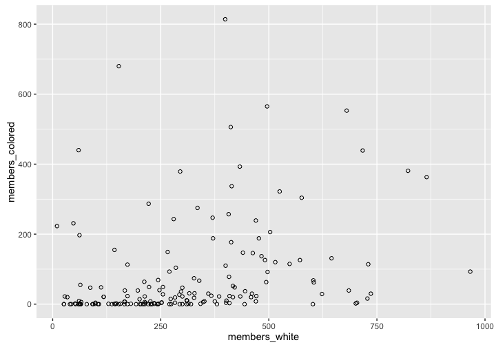
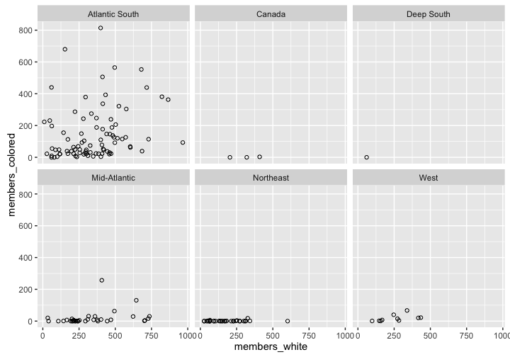
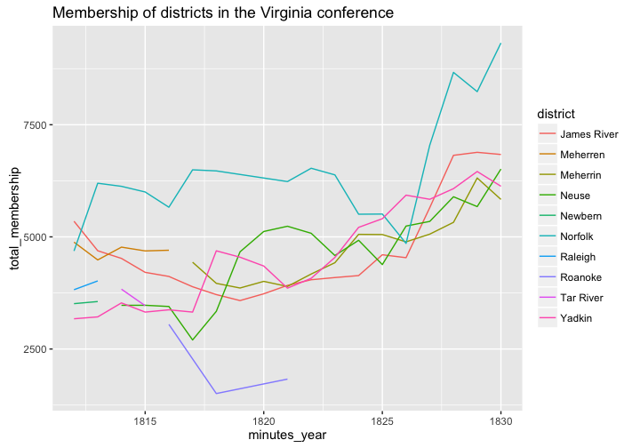

Download this worksheet as a .Rmd
More data manipulation with dplyr and tidy
Aims of this worksheet
In an earlier worksheet, you learned the basic data manipulation verbs from the dplyr package: select(), filter(), mutate(), arrange(), group_by(), and summarize(). In this worksheet you will learn additional data verbs from the dplyr and tidyr packages. These data verbs relate to window functions (lead() and lag()), data table joins (left_join() et al.), and data reshaping (spread() and gather())
To begin, we will load the necessary packages, as well as the Methodist data
library(dplyr)
library(tidyr)## Warning: package 'tidyr' was built under R version 3.2.3library(readr)
library(historydata)
library(ggplot2)
methodists <- read_csv("http://lincolnmullen.com/projects/worksheets/data/methodists.csv")Data joining with two table verbs (left_join() et al.)
Data lookups
It is often the case that we want to use some variable in our data to create a new variable. Consider the Methodist data for the year 1800. Perhaps we are interested in the racial composition of the churches. Do they tend to be all white and all black, or do some churches have both white and black members in varying proportions? The simplest way to get a look at that question is to create a scatter plot of the figures for white and black membership.
methodists_1800 <- methodists %>%
filter(minutes_year == 1800) %>%
select(meeting, state, members_white, members_colored)
ggplot(methodists_1800, aes(x = members_white, y = members_colored)) +
geom_point(shape = 1) 
That scatterplot is interesting as far as it goes, but we might reasonably suspect that the racial composition of methodist meetings varies by region. We could use the state variable to facet the plot by state. However, this has two problems. There are 20 states represented in that year.
methodists_1800$state %>% unique() %>% length()## [1] 20Our faceted plot would have 20 panels, which is too many. But more important, by looking at individual states we might be getting too fine grained a look at the data. We have good reason to think that it is regions that matter more than states.
It is easy enough to describe what we would do to translate states into a new column with regions. We would look at each state name and assign it to a region. Connecticut would be in the Northeast, New York would be in the Mid-Atlantic, and so on. So far when we have created new columns in a data frame we have done so with mutate().1 Another way to think of this problem, though, is to think of looking up the state names in a table where they associated with regions. We can create such a data frame with the code below. In many cases, though, it would make more sense to create a CSV file with the data and read it in as a data frame.
regions <- data_frame(
states = c("Connecticut", "Delaware", "Georgia", "Kentucky", "Maine",
"Maryland", "Massachusetts", "Mississippi", "New Hampshire",
"New Jersey", "New York", "North Carolina",
"Northwestern Territory", "Pennsylvania", "Rhode Island",
"South Carolina", "Tennessee", "Upper Canada", "Vermont",
"Virginia"),
region = c("Northeast", "Atlantic South", "Atlantic South", "West",
"Northeast", "Atlantic South", "Northeast", "Deep South",
"Northeast", "Mid-Atlantic", "Mid-Atlantic", "Atlantic South",
"West", "Mid-Atlantic", "Northeast", "Atlantic South", "West",
"Canada", "Northeast", "Atlantic South")
)And now we can inspect the table.
regions## Source: local data frame [20 x 2]
##
## states region
## (chr) (chr)
## 1 Connecticut Northeast
## 2 Delaware Atlantic South
## 3 Georgia Atlantic South
## 4 Kentucky West
## 5 Maine Northeast
## 6 Maryland Atlantic South
## 7 Massachusetts Northeast
## 8 Mississippi Deep South
## 9 New Hampshire Northeast
## 10 New Jersey Mid-Atlantic
## 11 New York Mid-Atlantic
## 12 North Carolina Atlantic South
## 13 Northwestern Territory West
## 14 Pennsylvania Mid-Atlantic
## 15 Rhode Island Northeast
## 16 South Carolina Atlantic South
## 17 Tennessee West
## 18 Upper Canada Canada
## 19 Vermont Northeast
## 20 Virginia Atlantic SouthWe can do a look up where we take the state column in the methodists_1800 data frame and associate it with the states column in our regions data frame. The result will be a new column region. Notice how we use the by = argument to specify which column in the left hand table matches which column in the right hand table.
methodists_region <- methodists_1800 %>%
left_join(regions, by = c("state" = "states"))
methodists_region## Source: local data frame [169 x 5]
##
## meeting state members_white members_colored region
## (chr) (chr) (int) (int) (chr)
## 1 Augusta Georgia 61 9 Atlantic South
## 2 Burke Georgia 297 36 Atlantic South
## 3 Richmond Georgia 548 115 Atlantic South
## 4 Washington Georgia 497 92 Atlantic South
## 5 Broad River South Carolina 604 62 Atlantic South
## 6 Bush River South Carolina 328 31 Atlantic South
## 7 Charleston South Carolina 60 440 Atlantic South
## 8 Cherokee South Carolina 79 0 Atlantic South
## 9 Edisto South Carolina 572 126 Atlantic South
## 10 Georgetown South Carolina 10 223 Atlantic South
## .. ... ... ... ... ...Then we can plot the results. As we suspected, there is a huge regional variation.
ggplot(methodists_region, aes(x = members_white, y = members_colored)) +
geom_point(shape = 1) +
facet_wrap(~ region)
Beginning in 1802, the Methodist minutes no longer kept track of the state in which a meeting was held. Instead it classified them into different conferences. For the years 1802 and after, create a look up table assigning the different conferences to regions of your choice, and join that table back to the Methodists data.
Can you summarize the racial composition of the different regions by year (i.e., a region had \(x\) percent white and black members for a given year) and create a plot of the changing racial composition in each region over time?
In the europop package there are two data frames,
europopwith the historical populations of European cities, andcity_coordswhich has the latitudes and longitudes of those cities. Load that package and join the two tables together. Can you get the populations of cities north of 48° of latitude?In the historydata package there are two tables,
judges_peopleandjudges_appointments. Join them together. What are the names of black judges who were appointed to the Supreme Court?What courts did those justices serve on before the Supreme Court?
Data reshaping (spread() and gather())
It can be helpful to think of tabular data as coming in two forms: wide data, and long data. Let’s load in a table of data. This data contains total membership figures for the Virginia conference of the Methodist Episcopal Church for the years 1812 to 1830.
va_methodists_wide <- read_csv("http://lincolnmullen.com/projects/worksheets/data/va-methodists-wide.csv")
va_methodists_wide## Source: local data frame [10 x 21]
##
## conference district 1812 1813 1814 1815 1816 1817 1818 1819
## (chr) (chr) (int) (int) (int) (int) (int) (int) (int) (int)
## 1 Virginia James River 5348 4691 4520 4209 4118 3888 3713 3580
## 2 Virginia Meherren 4882 4486 4771 4687 4702 NA NA NA
## 3 Virginia Meherrin NA NA NA NA NA 4435 3964 3860
## 4 Virginia Neuse NA NA 3474 3475 3448 2702 3340 4667
## 5 Virginia Newbern 3511 3558 NA NA NA NA NA NA
## 6 Virginia Norfolk 4686 6196 6127 6001 5661 6495 6471 NA
## 7 Virginia Raleigh 3822 4018 NA NA NA NA NA NA
## 8 Virginia Roanoke NA NA NA NA 3049 NA 1507 NA
## 9 Virginia Tar River NA NA 3834 3466 NA NA NA NA
## 10 Virginia Yadkin 3174 3216 3528 3323 3374 3323 4689 4547
## Variables not shown: 1820 (int), 1821 (int), 1822 (int), 1823 (int), 1824
## (int), 1825 (int), 1826 (int), 1827 (int), 1828 (int), 1829 (int), 1830
## (int)The first thing we can notice about this data frame is that it is very wide because it has a column for each of the years. The data is also suitable for reading because it like a table in a publication. We can read from left to right and see when certain districts begin and end and get the values for each year. The difficulties of computing on or plotting the data will also become quickly apparent. How would you make a plot of the change over time in the number of members in each district? Or how would you filter by year, or summarize by year? For that matter, what do the numbers in the table represent, since they are not given an explicit variable name?
The problem with the table is that it is not tidy data, because the variables are not in columns and observations in rows. One of the variables is the year, but its values are in the column headers. And another of the variables is total membership, but its values are spread across rows and columns and it is not explicitly named.
The gather() function from the tidyr package lets us turn wide data into long data. We need to tell the function two kinds of information. First we need to tell it the name of the column to create from the column headers and the name of the implicit variable in the rows. In the example below, we create to new columns minutes_year and total_membership. Then we also have to tell the function if there are any columns which should remain unchanged. In this case, the conference and district variables should remain the same, so we remove them from the gathering using the same syntax as the select() function.
va_methodists_wide %>%
gather(minutes_year, total_membership, -conference, -district)## Source: local data frame [190 x 4]
##
## conference district minutes_year total_membership
## (chr) (chr) (chr) (int)
## 1 Virginia James River 1812 5348
## 2 Virginia Meherren 1812 4882
## 3 Virginia Meherrin 1812 NA
## 4 Virginia Neuse 1812 NA
## 5 Virginia Newbern 1812 3511
## 6 Virginia Norfolk 1812 4686
## 7 Virginia Raleigh 1812 3822
## 8 Virginia Roanoke 1812 NA
## 9 Virginia Tar River 1812 NA
## 10 Virginia Yadkin 1812 3174
## .. ... ... ... ...We can see the results above. There are two ways that this result is not quite what we want. Because the years were column headers they are treated as character vectors rather than integers. We can manually convert them in a later step, but we can also let gather() do the right thing with the convert = argument. Then we have a lot of NA values which were explicit in the wide table but which can be removed from the long table with na.rm =.
va_methodists_long <- va_methodists_wide %>%
gather(minutes_year, total_membership, -conference, -district,
convert = TRUE, na.rm = TRUE)
va_methodists_long## Source: local data frame [100 x 4]
##
## conference district minutes_year total_membership
## (chr) (chr) (int) (int)
## 1 Virginia James River 1812 5348
## 2 Virginia Meherren 1812 4882
## 3 Virginia Newbern 1812 3511
## 4 Virginia Norfolk 1812 4686
## 5 Virginia Raleigh 1812 3822
## 6 Virginia Yadkin 1812 3174
## 7 Virginia James River 1813 4691
## 8 Virginia Meherren 1813 4486
## 9 Virginia Newbern 1813 3558
## 10 Virginia Norfolk 1813 6196
## .. ... ... ... ...Notice that now we can use the data in ggplot2 without any problem.
ggplot(va_methodists_long,
aes(x = minutes_year, y = total_membership, color = district)) +
geom_line() +
ggtitle("Membership of districts in the Virginia conference")
The inverse operation of gather() is spread(). With spread() we specify the name of the column which should become the new column headers (in this case minutes_year), and then the name of the column to fill in underneath those new column headers (in this case, total_membership). We can see the results below.
va_methodists_wide2 <- va_methodists_long %>%
spread(minutes_year, total_membership)
va_methodists_wide2## Source: local data frame [10 x 21]
##
## conference district 1812 1813 1814 1815 1816 1817 1818 1819
## (chr) (chr) (int) (int) (int) (int) (int) (int) (int) (int)
## 1 Virginia James River 5348 4691 4520 4209 4118 3888 3713 3580
## 2 Virginia Meherren 4882 4486 4771 4687 4702 NA NA NA
## 3 Virginia Meherrin NA NA NA NA NA 4435 3964 3860
## 4 Virginia Neuse NA NA 3474 3475 3448 2702 3340 4667
## 5 Virginia Newbern 3511 3558 NA NA NA NA NA NA
## 6 Virginia Norfolk 4686 6196 6127 6001 5661 6495 6471 NA
## 7 Virginia Raleigh 3822 4018 NA NA NA NA NA NA
## 8 Virginia Roanoke NA NA NA NA 3049 NA 1507 NA
## 9 Virginia Tar River NA NA 3834 3466 NA NA NA NA
## 10 Virginia Yadkin 3174 3216 3528 3323 3374 3323 4689 4547
## Variables not shown: 1820 (int), 1821 (int), 1822 (int), 1823 (int), 1824
## (int), 1825 (int), 1826 (int), 1827 (int), 1828 (int), 1829 (int), 1830
## (int)Just by looking at the data we can see that we got back to where we started, but we can also verify that programmatically.
identical(va_methodists_wide, va_methodists_wide2)## [1] TRUETurning long data into wide is often useful when you want to create a tabular representation of data. (And once you have a data frame that can be a table, the knitr::kable() function is quite nice.) And some algorithms, such as clustering algorithms, expect wide data rather than tidy data.
For the exercise, we will use summary statistics of the number of white and black members in the Methodists by year.
methodists_by_year_race <- methodists %>%
filter(minutes_year >= 1786) %>%
group_by(minutes_year) %>%
summarize(white = sum(members_white, na.rm = TRUE),
black = sum(members_colored, na.rm = TRUE),
indian = sum(as.integer(members_indian), na.rm = TRUE))
methodists_by_year_race## Source: local data frame [45 x 4]
##
## minutes_year white black indian
## (int) (int) (int) (int)
## 1 1786 18291 2890 0
## 2 1787 21949 3883 0
## 3 1788 30557 7991 0
## 4 1789 34425 8840 0
## 5 1790 45983 11682 0
## 6 1791 50580 13098 0
## 7 1792 52079 13871 0
## 8 1793 51486 14420 0
## 9 1794 52794 13906 0
## 10 1795 48121 12171 0
## .. ... ... ... ...The data in
methodists_by_year_racecould be tidier still. Whilewhite,black, andindianare variables, it is perhaps better to think of them as two different variables. One variable would berace, containing the racial descriptions that the Methodists used, and another would bemembers, containing the number of members. Using thegather()function, create that data frame.Use the data frame you created in the previous step to create a line plot of membership over time, mapping the
racecolumn to thecoloraesthetic.Now use that newly tidied data frame to create a wide data frame, where the years are the column headers and the racial descriptions are the rows.
Now use the same tidied data to create a wide data frame where the racial descriptions are column headers and the years are rows.
Window functions
There are a number of different kinds of window functions in R. We are going to look at two window functions, lead() and lag() which help us look for change over time. (For a fuller explanation of window functions, see the related dplyr vignette.)
To understand what a window function does, it is helpful to compare it to a transformation function and an aggregation function. Suppose we have a vector with five numeric values.
original <- c(1.1, 2.2, 3.3, 4.4, 5.5)A transformation function changes each element in the vector and returns a new value for each. In the example below, we round each element in the vector. We have a different result, but it still has five elements.
round(original, 0)## [1] 1 2 3 4 6In an aggregation function, we pass in a vector of numbers and get back a single value. In this case, we get the sum of the numbers.
sum(original)## [1] 16.5Aggregation functions work well with summarize(); transformation functions works well with mutate().
A window function gives back a vector of numbers, but a vector which has fewer useable elements than the original. It is like sliding a window over the vector. Consider the case below.
lead(original)## [1] 2.2 3.3 4.4 5.5 NAlag(original)## [1] NA 1.1 2.2 3.3 4.4The function lead() returns the next element of a vector in place of the original value. At the end of the vector we get an NA because there are no more elements left. The function lag() does the opposite, giving us the previous element in the vector. In that case, the first element of the returned vector is NA.
The lead() and lag() functions are useful for comparing one value to its previous or successor value. Suppose, for instance, that we have a vector of membership figures for each year. We can calculate the number of new members each year by subtracting the current value from its previous value.
membership <- c(100, 150, 250, 400, 600)
membership - lag(membership)## [1] NA 50 100 150 200Now that we understand those basics, we can apply that to the Methodist annual minutes data that we worked with in a previous lesson. Let’s start by getting just the membership data from Fairfax, Virginia. We will also calculate the members_general value for the years it is missing, and select only the columns we absolutely need.
fairfax <- methodists %>%
filter(meeting == "Fairfax") %>%
mutate(members_general = ifelse(is.na(members_general),
members_white + members_colored,
members_general)) %>%
select(minutes_year, meeting, starts_with("members"), -members_indian)
fairfax## Source: local data frame [54 x 5]
##
## minutes_year meeting members_general members_white members_colored
## (int) (chr) (int) (int) (int)
## 1 1775 Fairfax 30 NA NA
## 2 1776 Fairfax 350 NA NA
## 3 1777 Fairfax 330 NA NA
## 4 1779 Fairfax 309 NA NA
## 5 1780 Fairfax 361 NA NA
## 6 1781 Fairfax 301 NA NA
## 7 1782 Fairfax 362 NA NA
## 8 1783 Fairfax 310 NA NA
## 9 1784 Fairfax 317 NA NA
## 10 1786 Fairfax 260 260 0
## .. ... ... ... ... ...Now that we have the data, we can add a column for the number of new members added each year.
fairfax %>%
mutate(growth = members_general - lag(members_general)) ## Source: local data frame [54 x 6]
##
## minutes_year meeting members_general members_white members_colored
## (int) (chr) (int) (int) (int)
## 1 1775 Fairfax 30 NA NA
## 2 1776 Fairfax 350 NA NA
## 3 1777 Fairfax 330 NA NA
## 4 1779 Fairfax 309 NA NA
## 5 1780 Fairfax 361 NA NA
## 6 1781 Fairfax 301 NA NA
## 7 1782 Fairfax 362 NA NA
## 8 1783 Fairfax 310 NA NA
## 9 1784 Fairfax 317 NA NA
## 10 1786 Fairfax 260 260 0
## .. ... ... ... ... ...
## Variables not shown: growth (int)In what years did the Methodists grow in Fairfax? In what years did they shrink? Can you plot the growth?
How might you use the growth figures to detect errors in the data? Keep in mind that they might have shunk or grown because of the way that they were counted.
Find the growth in the number of white and black members in Fairfax, and plot them on the same chart. What is the pattern?
Return back to the original
methodistsdata. Beginning in 1802, the Methodists organized the data by conference, district, and meeting. For 1802 and following, calculate the growth for each conference. Which conferences were growing the most in absolute terms? Which were growing the most in relative terms (i.e., growth percentage)? Do you get a clearer picture by looking at the growth in districts? Feel free to plot the data if you wish and to add explanatory text.
And indeed, we could write a function that translates state names into regions.↩